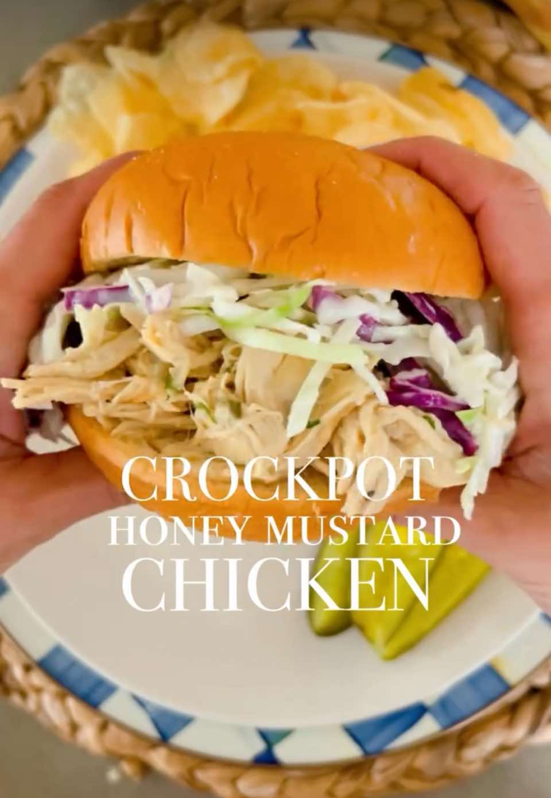

Crockpot honey mustard pulled chicken
Main Dish
PrepPT0S
CookPT3H

Ingredients
- 1 lb chicken breasts
- 1/2 cup onion diced
- 1 clove garlic minced
- 1/2 cup dijon mustard
- 3/4 cup honey
- 2 tablespoons salted butter
- 1 tablespoon Worcestershire sauce
- salt & pepper to taste
- 2 teaspoons dried chives for garnish (optional)
- coleslaw
- pickles
- Hamburger buns
Directions
- Place contents into crockpot and cook covered 3-4 hours on high or until chicken is fully cooked.
- Remove chicken, shred and place back into sauce.
- Stir in a few chives for color if desired.
- Keep warm until ready to serve.
- Add to burger bun, on top of salad, in tacos or eat as is!
This page includes Schema.org Recipe structured data for recipe importers.